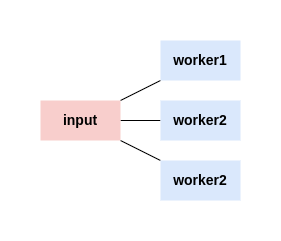

Fan out, Fan in
2022-11-03 / authors #ngoctd / tags #concurrency pattern #golang
You’ve got a pipeline set up. Data is flowing through your system beautifully. Sometimes, stages in your pipeline can be computationally expensive. When this happens, upstream stages in your pipeline can become blocked while waiting for your expensive stages to complete.
One of the interesting properties of pipelines is the ability they give you to operate on the stream of data using a combination of separate, often reordered stages. Maybe that would help improve the performance of the pipeline. In fact, it turns out it can, and this pattern has a name: fan-out, fan-in.
A generator function
Generator (aka Iterator) Pattern is used to generate a sequence of values which is used to produce some output. This allows the consumer of the data producer by the generator to run in parallel when the generator function is busy computing the next value.
func generator(data string) <- chan string {
channel := make(chan string)
go func(){
for {
channel <- data
time.Sleep(time.Duration(100*time.Millisecond))
}
}()
return channel
}
Fan out
Fan-out is a term to describe the process of starting multiple goroutines to handle input from the pipeline.
You might consider fanning out one of your stages if both of the following apply:
- It doesn’t rely on values that the state had calculated before.
- It takes a long time to run. (system call, a heavy cpu job, …)

The property of order-independence is important because you have no guarantee in what order concurrent copies of your stage will run, nor in what order they will return.
Fan in
Fan-in is a term to describe the process of combining multiple results into one channel.